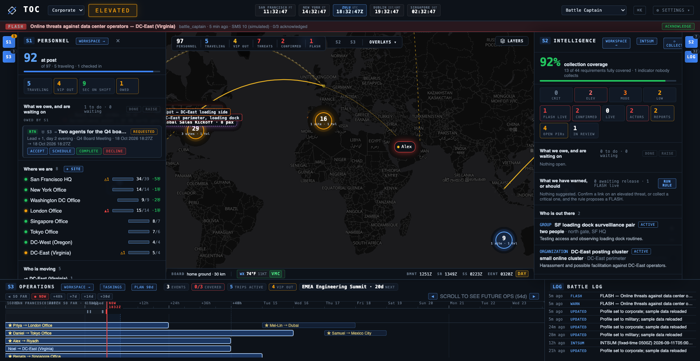

The Common Operating Picture in your pocket. Live in San Francisco.
When an incident breaks out or an executive travels, the watch floor doesn't stay tethered to a desk. The native COPTOC mobile app renders the live operational picture natively on iOS and Android with zero cloud dependencies.
SIGTOC is under construction.
SIGTOC is being built as an autonomous threat intelligence fusion engine. It ingests open feeds (USGS, GDACS, NOAA, WHO, FCDO), maps them into STIX 2.1 graphs, and feeds intelligence directly into the operations picture. The standalone intelligence workbench GUI and live collector pipelines are actively in development.
MODTOC is under construction.
We haven't built out the MODTOC engine or GUI yet — it is currently an open-source RFC and specification. Born from years leading integrity operations and coordinated inauthentic behavior (CIB) at TikTok, MODTOC is being designed to bring policy-as-code evaluations (make diff), severity × reach queue gating, and hash-chained audit trails to platform safety teams. We are looking for practitioners and engineers to collaborate with us.